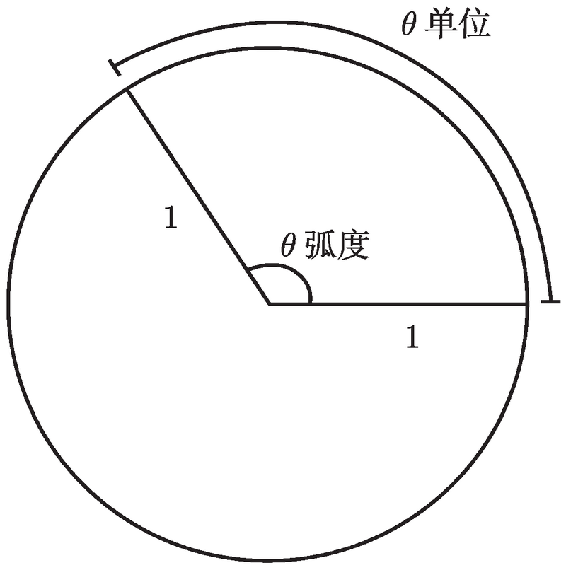
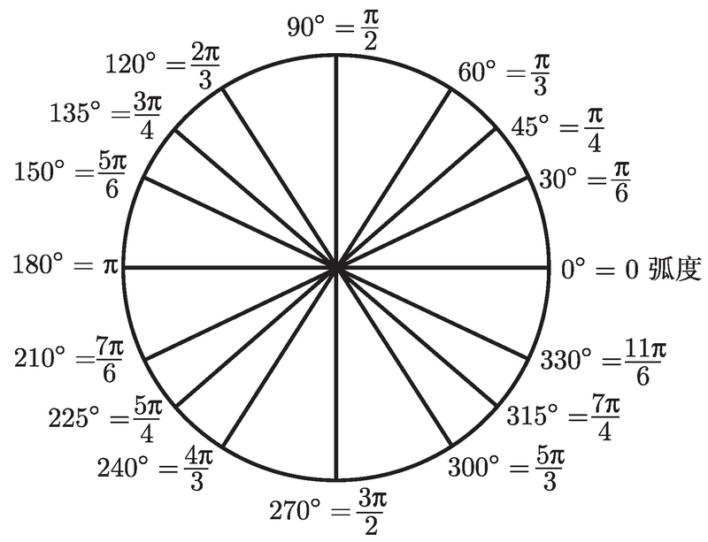

普林斯顿微积分读本–第2章:三角学
Table of Contents
- 2.1 基础知识
- 2.2 扩展三角函数定义域
- 2.3 三角函数图像
- 2.4 三角恒等式
2.1 基础知识
学习微积分必须要了解三角学, 弧度制，三角函数等，我们先从弧度开始。
弧度
定义
我们将旋转一周定义为 \(2\pi\) 弧度，用于代替 \(360^{\circ}\)
半径为 1 个单位的圆的周长是 2π 个单位, 这个圆的一个扇形的弧长就是这个扇形的圆心角的弧度, 如图：

弧度和角度的转换
更重要的是掌握弧度和角度的转换， 90°=π/2, 180°=π, 270°=3π/2 下图为角度和弧度转换:

弧度角度转换公式
公式: 弧度 = \(\frac{\pi}{180} *\) 角度
- 将75度转为弧度制: (π/180)*75=5π/12
- 5π/12 转换成角度: (180/π) × (5π/12) = 75°
三角函数
我们通过^三角形^来定义三角函数: 假设有一个直角三角形, 除直角外的一角被记为θ, 如图：
 三角函数的基本公式为：
三角函数的基本公式为：
正弦 \(sin(\theta)\) = {{c1 对边/斜边}} 余弦 \(cos(\theta)\) = {{c2 邻边/斜边}} 正切 \(tan(\theta)\) = {{c3 对边/邻边}}
如果是另一个角是θ，公式不变

三角函数还有一些倒函数面定义:
余切 :-> \(cot(x)=\frac{1}{tan(x)}\)
正割 :-> \(sec(x)=\frac{1}{cos(x)}\)
余割 :-> \(csc(x)=\frac{1}{sin(x)}\)
常用三角函数值
#card 背熟这张表! 数学不是死记硬背, 但有些内容是值得记忆
| 0(度) | \(\frac{\pi}{6}\)(30度) | \(\frac{\pi}{4}\)(45度) | \(\frac{\pi}{3}\)(60度) | \(\frac{\pi}{2}\)(90度) | |
|---|---|---|---|---|---|
| sin | 0 | \(\frac{1}{2}\) | \(\frac{1}{\sqrt 2}\) | \(\frac{\sqrt 3}{2}\) | 1 |
| cos | 1 | \(\frac{\sqrt 3}{2}\) | \(\frac{1}{\sqrt 2}\) | \(\frac{1}{2}\) | 0 |
| tan | 0 | \(\frac{1}{\sqrt 3}\) | 1 | \(\sqrt 3\) | * (不存在) |
2.2 扩展三角函数定义域
事实上三角函数远不止 0 至 π/2 这个范围，我们可以取任意角的正弦或者余弦, 哪怕这个角是负的
2.2.1 0到2π(360度)的三角函数
计算sin(θ)(或cos(θ)/tan(θ))的值, 其中 θ 是介于 0 到 \(\frac{π}{2}\) 的角. #card
1. 将平面划分为4象限

- 从x轴正方向开始旋转, 角度 \(\theta\) ，就是你要求的函数角度

- 如果你转动了 π/2, 你将正面向上并且你的足迹将是 y 轴的正半轴
- 如果你转动了角 π, 你将得到 x 轴的负半轴
- 如果你转动了角 3π/2, 你将得到 y 轴的负半轴
- 如果你转动了角 2π, 那么会回到了起始的那个位置, 即 x 轴的正半轴. 好像根本没转动过! 这就是为什么 0 ≡ 2π. 对于角度而言, 0 和 2π 是等价的
- 旋转后线条向x轴做垂线

- 在线上 任选某个点 并从该点画一条垂线至 x 轴
- 我们需要三个值：
- 该点的 x 坐标和 y 坐标。 x 和 y 可能会为负，x在负半轴上x值取负号, y在 x 轴以下取负号
- 该点到原点的距离r. r 总是正的, 因为它是距离。 通常我们会选择1作为r的值，这样得到的点 (x, y) 会落在^单位圆^上
根据勾股定理，\(r=\sqrt{x^2+y^2}\)
现在可以定义出三角函数, x、y 和 r 分别解释为邻边、对边和斜边 \(sin(\theta)=\frac{y}{r}\) \(cos(\theta)=\frac{x}{r}\) \(tan(\theta)=\frac{y}{x}\)
例子：计算sin(7π/6) #card

- 7/6π > π 因此直线落在第三象限
- 选取该射线上的一点, 该点至原点的距离 \(r = 1\)
- 从该点至 x 轴做了一条垂线
- 计算出射线与x轴的夹角，即7π/6-π=π/6
- \(sin (π/6) = 1/2\)
- 但1/2不是最终答案，因为对边y是负数，r是正数，所以 \(sin(θ) =y/r\) 最终值：sin(7π/6)=-1/2
判断三角函数的正负：ASTC 方法 #card

总结计算三角函数 0-2π 的过程 #card
1. 画象限图, 确定角在哪里
- 如果角在 x 轴或 y 轴上 (即没在任何象限中), 那么画出三角函数的图像, 从图像中读取数值
- 否则找出射线和 x 轴之间最小的角(参考角)
- 计算出参考角三角函数的值
- 根据astc判断符号
例子: 计算cos(7π/4)

- 根据图像， 参考角就是 2π 和 7π/4 的差 π/4.
- cos(π/4)=\(1/\sqrt{2}\)
- ASTC 图可知, 在第四象限中余弦为正
\(\cos(7\pi/4)=1/\sqrt{2}\)
2.2.2 [0, 2π] 以外的三角函数
如何取大于 2π 或小于 0 的角的三角函数 #card
加上或减去 2π 的倍数, 直到角在 0 和 2π 之间.
从图像上看, 三角函数并不是在 2π 结束了, 它一直在旋转。 比如 5π/2 ，这个图像在旋转了两周以后到达了 π/2, 所以二者的三角函数值是一样的，以下弧度的三角函数的值都是相等的: \(\frac{\pi}{2},\frac{5\pi}{2},\frac{9\pi}{2},\frac{13\pi}{2},\frac{17\pi}{2},\cdots\)
另一种情况，弧度为负，此时图像做了逆时针旋转. 比如 -3π/2. 此将 -3π/2 加上 2π，结果为π/2,下面为π/2相关的弧度： \(\cdots,-\frac{15\pi}{2},-\frac{11\pi}{2},-\frac{7\pi}{2},-\frac{3\pi}{2},\frac{\pi}{2},\frac{5\pi}{2},\frac{9\pi}{2},\frac{13\pi}{2},\frac{17\pi}{2},\cdots\)
我们可以用集合表示所有的弧度 \({\frac{\pi}{2} + 2\pi n}\) , n表示所有整数
例子：sec(15π/4) #card
1. sec(15π/4)是 cos(15π/4)的倒数，我们首先需要求出cos(15π/4)
- (15/4)π - 2π = (7/4)π
- cos(7π/4)= \(1/\sqrt{2}\)
- sec(15π/4)=\(\sqrt{2}\)
例子：sin(-5π/6) #card
1. 2π + (-5π/6)=7π/6
- \(sin(-5π/6) = sin(7π/6)=-1/2\)

2.3 三角函数图像
正弦、余弦和正切函数的图像都是周期的
sin(x) 的图像 #card
sin(x) 0 到 2π 的图像

sin(x) 以 2π 为单位重复 (sin(x) 是 x 的周期函数, 其周期为 2π), 图像如下：
 sinx图像关于原点有 180° 点对称性, 是奇函数.
sinx图像关于原点有 180° 点对称性, 是奇函数.
cos(x) 的图像 #card
0到2π时的cos图像
 cos(x) 是周期函数及其周期为 2π，其全部图像为
cos(x) 是周期函数及其周期为 2π，其全部图像为
 该图像关于 y 轴有镜面对称性，是偶函数
该图像关于 y 轴有镜面对称性，是偶函数
tan(x) 的图像 #card
tan 的图像和之前不同，先画出介于 -π/2 到 π/2 的图像

- 正切函数有垂直渐近线.
- 周期是 π, 而不是 2π.
y = tan (x) 的全部图像：

- 当 x 是 π/2 的奇数倍数时, y = tan(x)有垂直渐近线(因而此处是无定义的)
- tan(x) 是奇函数
sec(x) 的图像 #card

CSC(x)的图像 #card

Cot(X)的图像 #card

三角函数的奇偶性 #card
sin(x) tan(x) cot(x) csc(x) 是奇函数
cos(x) csc(x) 是偶函数
2.4 三角恒等式
\(\tan(x)=\frac{\sin(x)}{\cos(x)}\)
\(\cot(x)=\frac{\cos(x)}{\sin(x)}\)
有时, 根据这些恒等式, 用正弦和余弦来代替每一个正切和余切会有帮助, 但这只是你被卡住时不得已而为之的下下策.
毕达哥拉斯定理 #card
三角恒等式中最重要的就是毕达哥拉斯定理了 (用三角函数表示):
\(sin^2(x)+cos^2(x)=1\)
为什么这是毕达哥拉斯定理呢？如果直角三角形的斜边是 1, 其中一个角为 x, 自己验证三角形的其他两条边长就是 cos (x) 和 sin (x)
等式两边同除以 \(cos^2(x)\) -> \(tan^2(x)+1=sec^2(x)\) 等式两边同除以 \(sin^2(x)\) -> \(1+cot^2(x)=csc^2(x)\)
互余公式
一些函数的名字是以音节 co 开头的. 这是 互余(complementary) 的简称.
两个角互余, 意味着它们的和是 π/2 (或 90°).
互余的函数满足以下公式 #card
三角函数(x) = co-三角函数\(\Bigl(\frac{\pi}{2}-x\Bigr)\)
\(\sin(x)=\cos\Bigl(\frac{\pi}{2}-x\Bigr),\quad\tan(x)=\cot\Bigl(\frac{\pi}{2}-x\Bigr),\quad\sec(x)=\csc\Bigl(\frac{\pi}{2}-x\Bigr)\) \(\cos(x)=\sin\Bigl(\frac{\pi}{2}-x\Bigr),\quad\cot(x)=\tan\Bigl(\frac{\pi}{2}-x\Bigr),\quad\csc(x)=\sec\Bigl(\frac{\pi}{2}-x\Bigr)\)